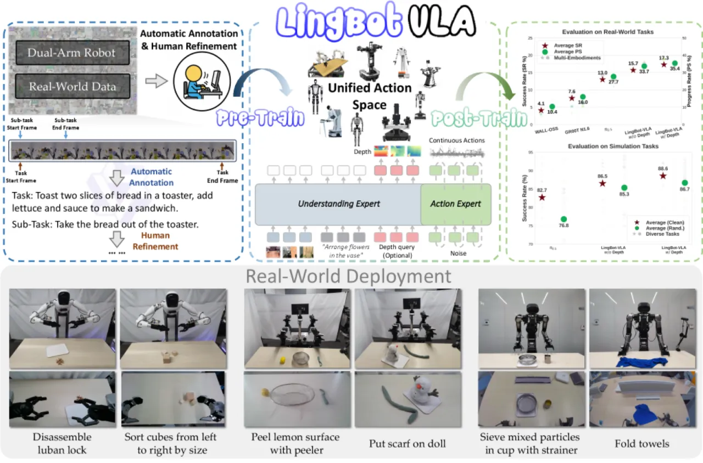
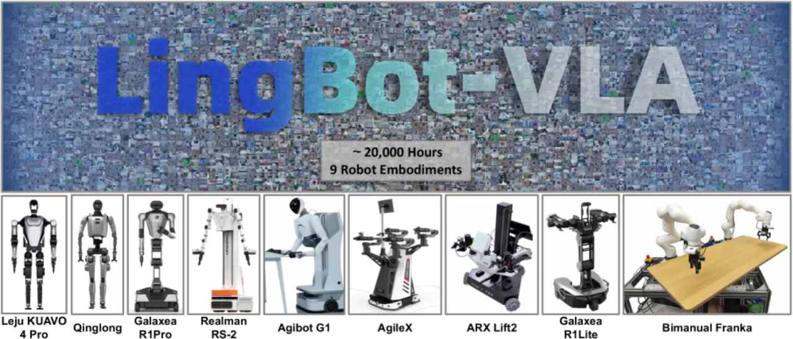
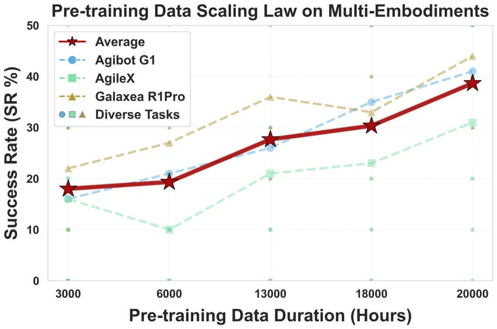
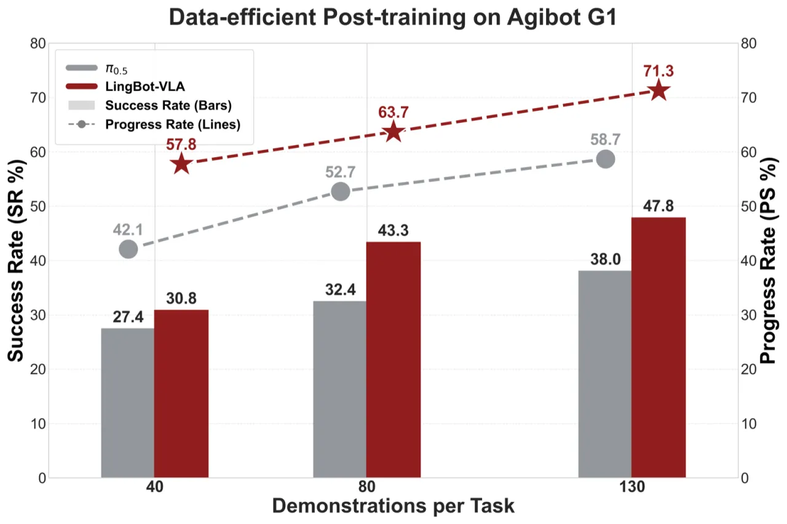

LingBot-VLA 在约 2 万小时来自 9 种双臂机器人配置的真实世界遥操作数据上预训练，采用 Mixture-of-Transformers 架构与 Flow Matching 动作预测，在 GM-100 百任务真实基准上以 17.30% SR / 35.41% PS 超越 π₀.₅，同时训练吞吐量提升 1.5–2.8 倍。
当前 VLA 模型面临两大核心挑战：数据规模不足与训练效率低下。大多数方法仅在数千小时数据上训练，且缺乏能在海量数据上高效扩展的训练框架，难以验证真正意义上的 scaling law。LingBot-VLA 的目标是构建一个务实可用的 VLA 基础模型——覆盖 9 种真实双臂机器人、2 万小时遥操作数据，并在 100 项任务的标准化基准上与主流方法直接对比。
"We present LingBot-VLA, a vision-language-action system trained on around 20,000 hours of real-world data from 9 popular dual-arm robot configurations."

LingBot-VLA 以 Qwen2.5-VL 为视觉语言骨干，引入独立的"action expert"模块，通过 Mixture-of-Transformers (MoT) 框架将视觉语言与动作两条通路解耦，再经共享 self-attention 机制耦合；动作输出采用 Flow Matching 预测 50-token 动作块；深度信息通过 vision distillation 蒸馏融入，进一步提升空间感知能力。

视觉语言路径与动作路径各自拥有独立的 Transformer 层（MLP、layer norm 等），通过 blockwise causal attention 实现模态间解耦：观测块与动作 token 分别处理，避免跨模态梯度干扰。共享的 self-attention 则保证两条路径能够互通信息，实现高效的跨模态对齐。输入观测包含三视角 RGB-D 图像、自然语言任务指令和机器人本体感知状态。
动作头采用 Flow Matching 对连续动作分布建模，每次预测 50-token 的动作序列块，支持快速推理。深度感知模块以可学习 query 与深度 token 对齐，并引入蒸馏损失（distillation loss）将专用深度模型的空间感知能力迁移至视觉骨干，无需推理时额外调用独立深度模型。训练效率优化包括：Fully Sharded Data Parallel (FSDP)、针对 action expert 的 shard 分组（减少通信开销）、bfloat16 存储 + float32 规约的混合精度策略、FlexAttention 稀疏多模态注意力，以及 torch.compile 算子融合——最终实现 GPU 数量从 8 到 256 的近线性吞吐扩展。
实验分为三部分：(1) GM-100 大规模真实世界基准——在 3 种机器人平台上各评测 100 项任务，指标为 Success Rate (SR) 和 Progress Score (PS)；(2) RoboTwin 2.0 仿真基准——干净场景与随机化场景；(3) 训练吞吐量分析。基线方法包括 WALL-OSS、GR00T N1.6 和 π₀.₅。
| 平台 | 方法 | SR (%) | PS (%) |
|---|---|---|---|
| Agibot G1 | WALL-OSS | 2.99 | 8.75 |
| Agibot G1 | GR00T N1.6 | 5.23 | 12.63 |
| Agibot G1 | π₀.₅ | 7.77 | 21.98 |
| Agibot G1 | LingBot w/o depth | 12.82 | 30.04 |
| Agibot G1 | LingBot w/ depth | 11.98 | 30.47 |
| AgileX | WALL-OSS | 2.26 | 8.16 |
| AgileX | GR00T N1.6 | 3.26 | 10.52 |
| AgileX | π₀.₅ | 17.20 | 34.82 |
| AgileX | LingBot w/o depth | 15.50 | 36.31 |
| AgileX | LingBot w/ depth | 18.93 | 40.36 |
| Galaxea R1Pro | WALL-OSS | 6.89 | 14.13 |
| Galaxea R1Pro | GR00T N1.6 | 14.29 | 24.83 |
| Galaxea R1Pro | π₀.₅ | 14.10 | 26.14 |
| Galaxea R1Pro | LingBot w/o depth | 18.89 | 34.71 |
| Galaxea R1Pro | LingBot w/ depth | 20.98 | 35.40 |
| 平均 | LingBot w/ depth | 17.30 | 35.41 |
LingBot-VLA 平均 SR 超越 π₀.₅ 4.28%，平均 PS 超越 7.76%。
| 场景 | π₀.₅ SR (%) | LingBot w/o depth SR (%) | LingBot w/ depth SR (%) |
|---|---|---|---|
| 干净场景 (Clean) | 82.74 | 86.50 | 88.56 |
| 随机化场景 (Randomized) | 76.76 | 85.34 | 86.68 |


基于 Qwen2.5-VL-3B-π 骨干，优化后的训练框架在 8-GPU 配置下达到 261 samples/second，较现有 VLA 专用代码库实现 1.5∼2.8× 提速。GPU 从 8 到 256 扩展时吞吐量近线性增长，验证了框架的大规模训练可行性。关键优化手段包括 FSDP 分布式训练、FlexAttention 稀疏注意力、torch.compile 算子融合及 bfloat16 混合精度。
作者明确表示，未来工作将聚焦于"scaling the model versatility by integrating single-arm and mobile robotic data"——当前版本仅在 9 种双臂配置上训练，单臂与移动机器人场景尚未覆盖。（stated）
论文指出"simulation environments typically employ idealized physical models"，真实部署中摩擦、光照、传感器噪声等因素可能导致性能下降。（stated）
GM-100 最高平均 SR 仅为 17.30%，说明在百任务规模的开放式评测下模型仍有较大提升空间；测试集约 50% 的原子动作未出现在训练集 top-100 中，泛化难度较高。（inferred）